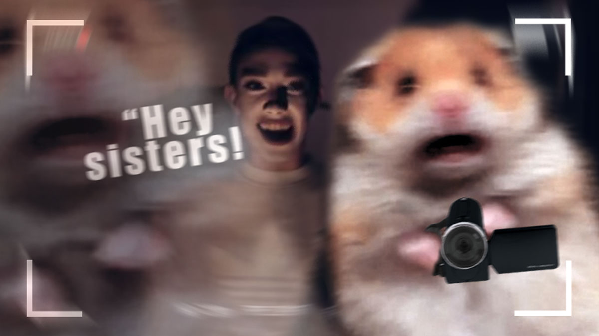

"Hey Sisters!!"

Memes; the younger generation's favorite way to communicate relatable messages, experiences, and emotions. We were given the task to birth a new meme by utilizing and combining existing memes.
For this meme, I've combined the James Charles' "Hey Sisters!" meme with the Scared Hamster meme which has resulted into this. In this scenario, the hamster is playing the blood mary game while recording with the camcorder. In the end, James Charles is summoned and the hamster freaks out.